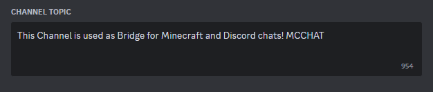

Getting Started
To Get Started, you need to follow the instructions below
Installation
Required Setup
1. Download the latest version of DiscordConnector and drag it into your plugins folder
2. Start the server and set bot token and guild ID by using commands or directly editing the config
3. Reload or restart your server
Chat
To use the chat bridge you need to add "MCCHAT" somewhere in the topic/description of the channel you want to use as chat bridge
Console
To use the console bridge you need to add "MCCONSOLE" somewhere in the
topic/description of the channel you want to use as console bridge
Only users with the "Manage Server" Permission are allowed to use the console
Updating Channel
To use the updating channel you need to add "MCSYNTAX:" followed by a syntax in the
topic/description of the channel you want to use as updating channel
Customization
Syntax
You can set the syntax of messages using the following commands:
Change how messages sent on Discord get sent in Minecraft - Example Syntax: [DC]{username}: {message}
Change how messages sent on Minecraft get sent in Discord - Example Syntax: [MC]{username}: {message}
Change how join messages get sent in Discord - Example Syntax: [MC]{username} joined the Server!
Change how leave messages get sent in Discord - Example Syntax: [MC]{username} left the Server!
Change how start messages get sent in Discord - Example Syntax: Bot Online!
Change how stop messages get sent in Discord - Example Syntax: Bot Offline!
Disabling Features
To disable features just set the syntax to nothing